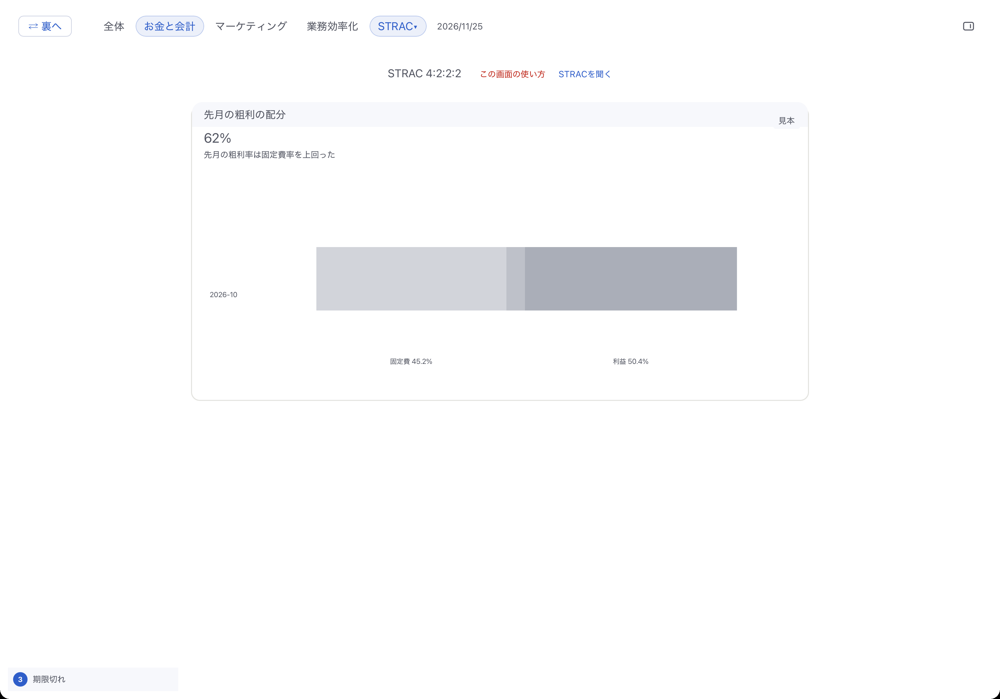

会計ソフト
↓
経営アプリ
会計ソフト・BI との違い
会計ソフトの帳簿から粗利や経費、目標を見て判断する使い方と、表計算やBIとの違いをお伝えします。

見本のデータ・版 2.0.5 のヘルプの写真大企業のやり方を、一人で事業をする方の判断に合わせて組み替えています。
| 比べること | 大企業のやり方 | 運転台とAI-Mits |
|---|---|---|
| 見える | BIを使い、複数の部署の数字を集めて見ます。 | 会計やお客様などの数字を集め、自分の事業の変化を見ます。 |
| 見立て | 分析担当者や外部のコンサルに、数字から何をするかを相談します。 | 数字と仕事の事情をAI-Mitsに話し、次に何をするかを考えます。 |
| 誰が決めるか | 担当者の分析をもとに、経営者や会議で決めます。 | AI-Mitsとの相談を使い、事業主ご本人が決めます。 |
| 導入に要る人 | データを整える専門家や、部署間の調整をする人が必要になることがあります。 | 専門の分析担当者を置かずに使うことを目指します。初めの接続や数字の確認はご本人が行います。 |
| 1か月の回し方 | 部署ごとに数字を集め、分析や会議を経て判断します。 | 月の数字を見て変化を確かめ、AI-Mitsに相談し、決めた行動を次の月に振り返ります。 |
| すること | Excelと普段使いのAI | 経営アプリ |
|---|---|---|
| 準備する物 | 会計・決済・顧客の数字を出し、同じ期間と項目にそろえて貼ります。 説明用の10月の売上80万円・原価15万円・ほかの経費20万円をそろえます。 | 接続やCSV取り込みの設定後、取り込んだ数字を画面で見ます。最初の接続と科目の確認は必要です。 見本の架空会社・説明用の10月と同じ項目を確かめます。 |
| 図にする操作 | 比較したい数字を選び、表とグラフを自分で作ります。 外注前45万円と、5万円を足した後40万円を図にします。 | 用意した図から、残高・粗利・お客様・仕事時間の変化を選んで見ます。 月次決算で外注前の数字を見ます。外注後40万円は説明用の計算です。 |
| 相談に渡す物 | 数字の意味・期間・仕事の事情を説明し、表や画像を添えます。 同じ数字と「外注の5万円を足すと、いくら残りますか」を渡します。 | 見ている画面から相談します。数字を添えるかは自分で選び、仕事の事情も書きます。 同じ数字・同じ問いの比較欄へ ／ AI-Mitsの本物の答えを見る 会社・月・添付要約を確かめ、同じ問いを送る案です。 |
| 翌月の再利用 | 翌月の数字への差し替えと、前に決めた行動の記録を自分で続けます。 翌月の実績に差し替え、見積もりと決めた行動を記録します。 | 同じ画面で月を変えて比べ、前の相談を開いて振り返ります。数字の取得と内容の確認は続けてください。 翌月の会社・月・実績を確認し、前の相談と決めた行動を振り返ります。 |
管理会計とは？ ── 攻めの経営者のための会計
| 会計の種類 | 何のための会計か | 誰が見るか | このアプリとの関係 |
|---|---|---|---|
| 税務会計 | 税金を正しく計算して払うため | 事業者・税理士・税務署 | 会計ソフトで整えた帳簿を、このアプリに取り込めます。 |
| 財務会計 | 西田の説明では、融資や投資の効果を考えるため | 経営者・融資や投資に関わる人 | 資金や投資を考えるときの見方として、管理会計との違いをご確認ください。 |
| 管理会計 | 攻めの経営者のための会計 根拠：Mits様 2026-11-25 | 経営者自身 | 取り込んだ帳簿を、ご自分の経営判断に合う分類に組み替えられます。 |
僕ら小さい企業でも必ずやらなきゃいけないのは、管理会計。この管理会計っていうのが、税務会計とものすごくかけ離れてるんですね
会計をですね、自分用に組み替えなきゃいけないんですよね
会計ソフトの帳簿を、経営判断に使える数字に組み替えられます。
税金を正しく払うための記録は、これまでどおり会計ソフトで整えてください。
このアプリではその帳簿を読み取り、費用の分け方や粗利の配分を、ご自分で考えられます。
両方を一緒に使うと、記録した数字から、これから何にお金を使うかまで考えられます。
| 会計ソフト | 経営アプリ |
|---|---|
| 税務会計・税金を正しく払う | 管理会計・経営者が決める |
会計ソフトで整理した数字を、経営の判断にも使えます。
目標やお客様、働く時間も合わせて見られます。
記録のために集めた数字を、ご自分の事業を考えるためにも使ってください。
会計ソフト
↓
経営アプリ
お使いの会計ソフトから数字を取り込み、経営の画面で見られます。
月ごとに比べると、利益や経費がどう変わったかを確かめられます。
気になったらAI-Mitsに話して、次に何をするか考えてください。
| 大企業の BI | 経営アプリ（一人起業家向け） |
|---|---|
BIは、使う目的に合わせて選べます組織の情報を分析して、共有するために使うことがあります。 何の情報が必要か、何に使いたいかを確かめて選んでください。 先に知りたいことを決めておくと、使う目的が具体的になります。 | 経営アプリでは、自分の事業を考えられます目標、お金、お客様、時間を合わせて経営を考えられます。 ご自分の事業で、何が変わっているかを確かめてください。 その数字を、次に何をするか決めるために使えます。 |
一人起業家や小さな事業の経営判断に使っていただくために作っています。
目標、お金、お客様、仕事の時間を見ながら考えられます。
専門の分析担当者がいなくても、画面の説明を読みながら使えます。
| BI | 経営アプリ |
|---|---|
| 会社の担当者が社内で使う・資料請求から始まる | 一人で決める人が自分の数字で使う・30日お試しから始まる |
画面を見ながら、自分の事業で何を確かめたいかを考えられます。
見本の数字で操作して、気になる機能や相談の使い方を見てください。
利用条件は、料金のページにまとめています。
| 表計算（Excel・会計ソフトの試算表）で見る | 経営アプリで見る |
|---|---|
表計算でできることもご確認くださいご自分で集計したり、比較する表を作ったりするときに使えます。 | 経営アプリでは、図を見ながら相談できます数字の図や推移、説明を見て、AI-Mitsに気になることを聞けます。 ご自分の事業の変化を確かめるために使ってください。 |
数字を図や推移で見て、気になる変化を確かめられます。
画面の説明を読んで、さらに考えたいことがあればAI-Mitsに話してください。
集計した数字から、次に何をするかまで考えられます。
目指しているのは、数字を見やすくし、AI-Mitsとの相談も使って、ご自分で経営を判断できることです。
会計ソフトの数字から変化を見つけ、その理由や現場で知っていることを添えて相談できます。
最後に何をするかをご自分で決め、仕事を変えるところまで考えられるようにしていきます。
経営アプリは、学びと経営アプリ・AI-Mitsをつなぎ、ご自分の数字で確かめ、相談し、行動して振り返るための設計です。
3DAYSも、AIの操作を覚えることから商品を作り、届け、改善する経営へ進み、効率化でできた時間の使い方まで考えます。
学びたいのか、事実を見たいのか、次の判断を相談したいのか、いま気になるところからご覧ください。
NORMALとDEEPは、同じ値上げの問いに対する最初の一答どうしを比べます。NORMALは商品を一つに絞る質問、DEEPはお客様が1年で得た変化を尋ねる質問です。続きの往復はDEEPだけを掲載しています。普段のAIとの回答比較は未実施です。